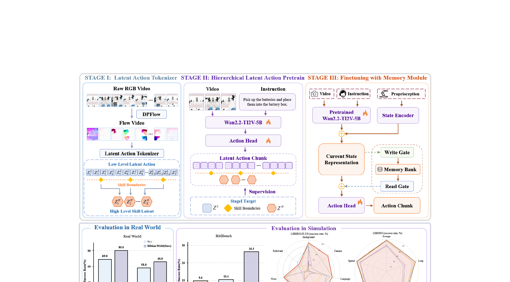

HiMem-WAM: Hierarchical Memory-Gated World Action Models for Robotic Manipulation
Sun 等 · 2026 技术报告 · arXiv:2606.10363 · Zotero 4RTGRC22
HiMem-WAM 把低层 motion latent 进一步聚合为高层 skill latent，并只在预测到技能边界时向外部 memory bank 写入紧凑任务状态；部署时从当前观察与稀疏历史事件直接预测动作，不需要生成未来 RGB 或计算光流。
§1 Introduction：短窗 WAM 为什么会在长任务里忘掉已经发生的事
短时 WAM 能根据最近图像预测动作与未来，但长程任务包含“先打开柜门、再取物、最后放回”等跨阶段依赖。关键状态可能已经离开视野：某个容器是否打开、子任务是否完成、被遮挡物体放在哪里。无限延长视觉窗口既耗算力，也让无关帧淹没真正需要记忆的事件。
HiMem-WAM 把控制层次化为运动级 latent action、技能级 latent 与外部记忆。planner 预测高层 skill，executor 展开低层 latent action；write gate 只在预测到技能边界时写入紧凑任务状态，read gate 在当前决策需要时检索。目标不是保存全部视频，而是把任务状态变化作为稀疏记忆事件。
展开原文 · 核心机制
“writes compact task states only at predicted skill transitions”
§2 Related Work：固定历史、KV-cache 与事件记忆
多帧策略和固定窗口 memory 通过堆叠最近观察缓解部分遮挡，但窗口长度与计算成正比，且不保证保留很早的关键状态。KV-cache 保存 Transformer 历史，适合自回归序列，却仍可能无限增长。MemoryVLA、MemER 等显式记忆方法开始压缩历史，但写入时机和任务层级决定信息是否有用。
HiMem-WAM 将记忆写入绑定到技能边界，把 motion、skill、memory 三种时间尺度分开。与仅靠 WAM 未来预测的策略相比，它承认短期想象无法替代长期状态；与密集历史聚合相比，它用事件驱动门控控制记忆容量。
§3 为什么普通短窗 WAM 会忘
§4 三阶段层次 latent

1. 发现 motion 与 skill 两级 latent
高层 latent 复用跨时步的技能语义。
输入是什么：当前任务提供的原始观测、指令、机器人状态或训练数据。先明确这些输入，才能判断后面的结论是否用了部署时拿不到的信息。
这一步究竟做什么：本步骤执行“发现 motion 与 skill 两级 latent”。具体来说，高层 latent 复用跨时步的技能语义。 系统记录中间计算及其对应时刻，需要时直接读取；当输入变化太大时重新计算，避免缓存误差不断累积。
输出到哪里：一组比原始输入更紧凑的内部特征；它不是最终动作或画面。这个结果会交给下一步“视觉语言预测 latent action”继续处理。
为什么不能省略：模型不能高效地直接在所有原始像素和长序列上推理；这一步把信息压成后续模块能处理、比较和复用的形式。
2. 视觉语言预测 latent action
把无动作视频/世界先验压入隐空间。
输入是什么：来自上一步“发现 motion 与 skill 两级 latent”的产物：一组比原始输入更紧凑的内部特征；它不是最终动作或画面。本步骤还会按论文设置读取当前条件、时间步或训练信号。
这一步究竟做什么：本步骤执行“视觉语言预测 latent action”。具体来说，把无动作视频/世界先验压入隐空间。 它把原本模糊的‘看起来对不对’拆成可重复计算或人工核对的判断，从而让不同模型能在同一标准下比较。
输出到哪里：一组诊断数值、分类结果或评测分数；它告诉后续模块当前结果哪里好、哪里需要修正。这个结果会交给下一步“学习何时读写记忆”继续处理。
为什么不能省略：没有统一诊断或评分，后续模块无法知道哪里出错，也无法公平比较两个模型是否真的进步。
3. 学习何时读写记忆
边界标签监督写门，稀疏正则限制滥写。
输入是什么：来自上一步“视觉语言预测 latent action”的产物：一组诊断数值、分类结果或评测分数；它告诉后续模块当前结果哪里好、哪里需要修正。本步骤还会按论文设置读取当前条件、时间步或训练信号。
这一步究竟做什么：本步骤执行“学习何时读写记忆”。具体来说，边界标签监督写门，稀疏正则限制滥写。 这里处理的只是整条链路中的一个接口：把上一步的结果整理成下一步能够正确读取和继续计算的形式。
输出到哪里：经过本步骤处理、含义更明确的中间结果。这个结果会交给下一步“无未来生成地执行”继续处理。
为什么不能省略：它承担上下两步之间的接口；缺少它，前一步产生的信息无法以正确格式或正确含义传到下一步。
4. 无未来生成地执行
从 memory-adapted state 解码动作。
输入是什么：来自上一步“学习何时读写记忆”的产物：经过本步骤处理、含义更明确的中间结果。本步骤还会按论文设置读取当前条件、时间步或训练信号。
这一步究竟做什么：本步骤执行“无未来生成地执行”。具体来说，从 memory-adapted state 解码动作。 模型从相同起点产生候选未来，后续模块再检查这些未来是否符合条件、物理规律或动作需要。
输出到哪里：一个或多个候选未来、动作或轨迹，以及必要的中间状态。这是图中这条链路的最终产物，随后会进入真实执行、模型更新或指标评测。
为什么不能省略：机器人动作会改变下一次观测；只有执行后重新读取现实，才能发现预测误差并阻止错误连续累积。
§5 边界门控记忆
- $x_t$
- 编码当前视觉、本体状态与语言后的事件表示。
- $c_t^m=Read(M_t,x_t)$
- 以当前事件为查询，从长期记忆中取回与此刻决策相关的历史，而不是重放全部旧 token。
- $g_t$
- 写入门，判断当前事件是否值得更新记忆；它控制容量与遗忘。
- $M_{t+1}$
- 更新后的持久状态。错误写入会污染后续多步决策，因此需要事件选择和记忆消融。
$g_t$ 不是每步都写，而是在发现的 skill boundary 附近开启。这样 memory 长度随“有意义事件数”增长，而不是随相机帧数增长。
§6 推理路径
- $z^h$
- 高层技能，决定当前阶段要做什么。
- $Z^l$
- 低层运动 latent chunk，描述短时动作变化。
- $a$
- 解码出的可执行连续控制。
§7 结果与边界
§8 实验归因与复现：记忆增益来自层次结构还是更多状态
最小可信复现清单
- 定义 skill boundary 标签或自监督来源，以及 gate 的阈值和温度。
- 给出 memory bank 容量、替换规则、读写频率和 episode reset。
- 区分 planner、executor、memory 三阶段的冻结/微调顺序。
- 比较相同 token 预算的长窗口、KV-cache、dense memory 和 gated memory。
- 对遮挡、打断后恢复、子任务顺序变化做专门评测。
HiMem-WAM 的关键不是“加一个 memory token”，而是用技能边界决定何时压缩历史，让记忆容量追随任务事件而非视频长度。